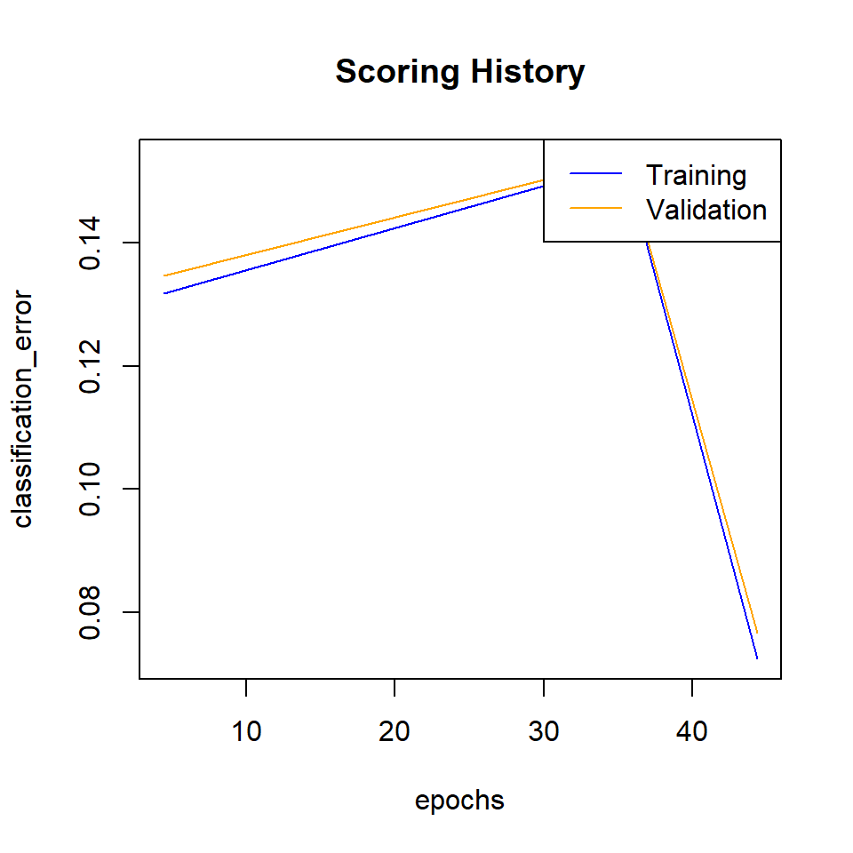
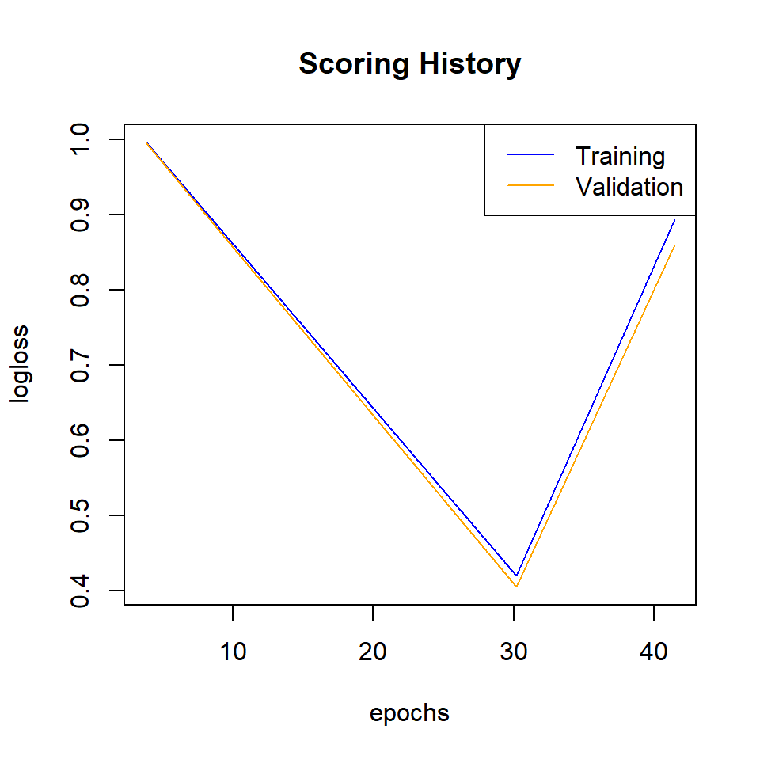
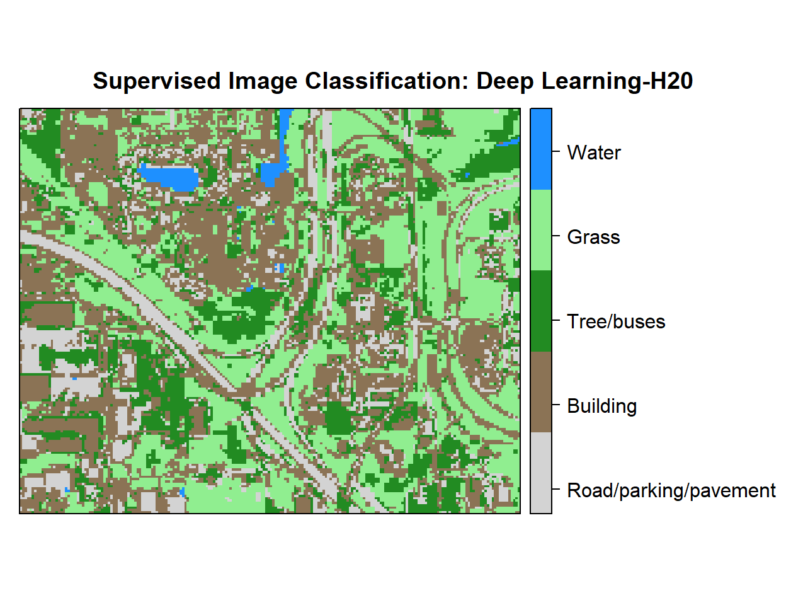

Deep Neural Network - Supervised Image Classification in H20 R
Deep Neural Networks (or Deep Dearning) is based on a multi-layer, feed-forward artificial neural network that is trained with stochastic gradient descent using back-propagation. The network can contain many hidden layers consisting of neurons with activation functions. Advanced features such as adaptive learning rate, rate annealing, momentum training, dropout, L1 or L2 regularization, checkpointing, and grid search enable high predictive accuracy. Each computer node trains a copy of the global model parameters on its local data with multi-threading (asynchronously) and contributes periodically to the global model via model averaging across the network.
In this tutorial will show how to implement a Deep Neural Network for pixel based supervised classification of Sentinel-2 multispectral images using the H20 package in R.
H2O is an open source, in-memory, distributed, fast, and scalable machine learning and predictive analytics platform that allows you to build machine learning models on big data and provides easy productionalization of those models in an enterprise environment. It’s core code is written in Java and can read data in parallel from a distributed cluster and also from local cluster. H2O allows access to all the capabilities of H2O from an external program or script via JSON over HTTP. The Rest API is used by H2O’s web interface (Flow UI), R binding (H2O-R), and Python binding (H2O-Python). Requirement and installation steps in R can be found here.
First, we will split the “point_data” into a training set (75% of the data), a validation set (12%) and a test set (13%) data. The validation data set will be used to optimize the model parameters during the training process. The model’s performance will be tested with the test data set. Finally, we will predict land use classes using a grid data set.
Load packages
library(rgdal) # spatial data processing
library(raster) # raster processing
library(plyr) # data manipulation
library(dplyr) # data manipulation
library(RStoolbox) # plotting raster data
library(ggplot2) # plotting
library(RColorBrewer) # Color
library(sp) # Spatial data
library(ggplot2) # PlottingThe data could be available for download from here.
# Define data folder
dataFolder<-"D:\\Dropbox\\Spatial Data Analysis and Processing in R\\DATA_RS_DNN\\"Load point and grid data
point<-read.csv(paste0(dataFolder,".\\Sentinel_2\\point_data.csv"), header = T)
grid<-read.csv(paste0(dataFolder,".\\Sentinel_2\\prediction_grid_data.csv"), header = T)Creat data frames
point.data<-cbind(point[c(3:13)])
grid.data<-grid[c(4:13)]
grid.xy<-grid[c(3,1:2)]Install H2O
#install.packages("h20")Start and Initialize H20 local cluster
library(h2o)
localH2o <- h2o.init(nthreads = -1) Import data to H2O cluster
df<- as.h2o(point.data)
grid<- as.h2o(grid.data)Split data into train, validation and test dataset
splits <- h2o.splitFrame(df, c(0.75,0.125), seed=1234)
train <- h2o.assign(splits[[1]], "train.hex") # 75%
valid <- h2o.assign(splits[[2]], "valid.hex") # 12%
test <- h2o.assign(splits[[3]], "test.hex") # 13%Create response and features data sets
y <- "Class"
x <- setdiff(names(train), y)Tuning and Optimizations parameters:
More details about the of Tuning and Optimization parameters of the H20 Deep Neural Network for supervised classification can be found here
Grid Search for hyperprameters
We can use the h2o.grid() function to perform a Random Grid Search (RGS). We could also test all possible combinations of parameters with Cartesian Grid or exhaustive search, but RGS is much faster when we have a large number of possible combinations and usually finds sufficiently accurate models.For RGS, we first define a set of hyper-parameters and search criteria to fine-tune our models. Because there are many hyper-parameters, each with a range of possible values, we want to find an (ideally) optimal combination to maximize our model’s accuracy.
Activation Functions
Rectifier: is the default activation function. It is the fastest and most versatile option. It can lead to instability though and tends to be lower in accuracy. Tanh: The hyperbolic tangent is a scaled and shifted variant of the sigmoid activation function. It can take on values from -1 to 1 and centers around 0. Tanh needs more computational power than e.g. the Rectifier function. Maxout: is an activation function that is the max of the inputs. It is computationally quite demanding but can produce high accuracy models. ** …WithDropout:** When we specify with dropout, a random subset of the network is trained and the weights of all sub-networks are averaged. It works together with the parameter hidden_dropout_ratios, which controls the amount of layer neurons that are randomly dropped for each hidden layer. Hidden dropout ratios are useful for preventing overfitting on learned features.
Hidden layers
are the most important hyper-parameter to set for deep neural networks, as they specify how many hidden layers and how many nodes per hidden layer the model should learn
L1 and L2 penalties
L1: lets only strong weights survive L2: prevents any single weight from getting too big.
rho Adaptive learning rate time decay factor (similarity to prior updates). Defaults to 0.99. epsilon Adaptive learning rate smoothing factor (to avoid divisions by zero and allow progress). Defaults to 1e-08.
momentum_start Initial momentum at the beginning of training (try 0.5). Defaults to 0. momentum_stable Final momentum after the ramp is over (try 0.99). Defaults to 0. max_w2 Constraint for squared sum of incoming weights per unit (e.g. for Rectifier). Defaults to 3.4028235e+38.
hyper_params <- list(
activation = c("Rectifier", "Maxout", "Tanh",
"RectifierWithDropout", "MaxoutWithDropout",
"TanhWithDropout"),
hidden = list(c(5, 5, 5, 5, 5), c(10, 10, 10, 10), c(50, 50, 50), c(100, 100, 100)),
epochs = c(50, 100, 200),
l1 = c(0, 0.00001, 0.0001),
l2 = c(0, 0.00001, 0.0001),
rate = c(0, 01, 0.005, 0.001),
rate_annealing = c(1e-8, 1e-7, 1e-6),
rho = c(0.9, 0.95, 0.99, 0.999),
epsilon = c(1e-10, 1e-8, 1e-6, 1e-4),
momentum_start = c(0, 0.5),
momentum_stable = c(0.99, 0.5, 0),
input_dropout_ratio = c(0, 0.1, 0.2),
max_w2 = c(10, 100, 1000, 3.4028235e+38)
)
hyper_params## $activation
## [1] "Rectifier" "Maxout" "Tanh"
## [4] "RectifierWithDropout" "MaxoutWithDropout" "TanhWithDropout"
##
## $hidden
## $hidden[[1]]
## [1] 5 5 5 5 5
##
## $hidden[[2]]
## [1] 10 10 10 10
##
## $hidden[[3]]
## [1] 50 50 50
##
## $hidden[[4]]
## [1] 100 100 100
##
##
## $epochs
## [1] 50 100 200
##
## $l1
## [1] 0e+00 1e-05 1e-04
##
## $l2
## [1] 0e+00 1e-05 1e-04
##
## $rate
## [1] 0.000 1.000 0.005 0.001
##
## $rate_annealing
## [1] 1e-08 1e-07 1e-06
##
## $rho
## [1] 0.900 0.950 0.990 0.999
##
## $epsilon
## [1] 1e-10 1e-08 1e-06 1e-04
##
## $momentum_start
## [1] 0.0 0.5
##
## $momentum_stable
## [1] 0.99 0.50 0.00
##
## $input_dropout_ratio
## [1] 0.0 0.1 0.2
##
## $max_w2
## [1] 1.000000e+01 1.000000e+02 1.000000e+03 3.402823e+38Early stopping criteria
stopping_metric: metric that we want to use as stopping criterion stopping_tolerance and stopping_rounds: training stops when the the stopping metric does not improve by the stopping tolerance proportion any more (e.g. by 0.05 or 5%) for the number of consecutive rounds defined by stopping rounds.
search_criteria <- list(strategy = "RandomDiscrete",
max_models = 200,
max_runtime_secs = 900,
stopping_tolerance = 0.001,
stopping_rounds = 2,
seed = 1345767)Now, we can train the model with combinations of hyper-parameters from our specified stopping criteria and hyper-parameter grid.
DNN_grid <- h2o.grid(
algorithm="deeplearning",
grid_id = "DNN_grid_ID",
x= x,
y = y,
training_frame = train,
validation_frame =valid,
stopping_metric = "logloss",
nfolds=10,
hyper_params = hyper_params,
search_criteria = search_criteria,
seed = 42)Grid parameters
grid.dnn <- h2o.getGrid("DNN_grid_ID",sort_by="RMSE",decreasing=FALSE)grid.dnn@summary_table[1,]## Hyper-Parameter Search Summary: ordered by increasing RMSE
## activation epochs epsilon hidden input_dropout_ratio
## 1 Rectifier 49.91064448589369 1.0E-6 [100, 100, 100] 0.1
## l1 l2 max_w2 momentum_stable momentum_start rate
## 1 1.0E-5 1.0E-4 3.4028235E38 0.5 0.5 0.001
## rate_annealing rho model_ids rmse
## 1 1.0E-8 0.999 DNN_grid_ID_model_2 0.4665611714169148The Best Model
best_model <- h2o.getModel(grid.dnn@model_ids[[1]]) ## model with lowest logloss
best_model## Model Details:
## ==============
##
## H2OMultinomialModel: deeplearning
## Model ID: DNN_grid_ID_model_2
## Status of Neuron Layers: predicting Class, 5-class classification, multinomial distribution, CrossEntropy loss, 21,805 weights/biases, 264.3 KB, 990,047 training samples, mini-batch size 1
## layer units type dropout l1 l2 mean_rate rate_rms
## 1 1 10 Input 10.00 % NA NA NA NA
## 2 2 100 Rectifier 0.00 % 0.000010 0.000100 0.326439 0.378340
## 3 3 100 Rectifier 0.00 % 0.000010 0.000100 0.094478 0.125418
## 4 4 100 Rectifier 0.00 % 0.000010 0.000100 0.113505 0.188188
## 5 5 5 Softmax NA 0.000010 0.000100 0.310977 0.371920
## momentum mean_weight weight_rms mean_bias bias_rms
## 1 NA NA NA NA NA
## 2 0.000000 0.018042 0.812464 -0.522467 0.717334
## 3 0.000000 -0.145769 0.334543 -0.111294 1.012745
## 4 0.000000 -0.073061 0.218634 -0.233580 0.634223
## 5 0.000000 -0.161464 0.465983 -0.155617 0.847374
##
##
## H2OMultinomialMetrics: deeplearning
## ** Reported on training data. **
## ** Metrics reported on temporary training frame with 10047 samples **
##
## Training Set Metrics:
## =====================
##
## MSE: (Extract with `h2o.mse`) 0.1621272
## RMSE: (Extract with `h2o.rmse`) 0.4026502
## Logloss: (Extract with `h2o.logloss`) 1.151394
## Mean Per-Class Error: 0.3265571
## Confusion Matrix: Extract with `h2o.confusionMatrix(<model>,train = TRUE)`)
## =========================================================================
## Confusion Matrix: Row labels: Actual class; Column labels: Predicted class
## Class_1 Class_2 Class_3 Class_4 Class_5 Error Rate
## Class_1 1707 75 529 0 0 0.2614 = 604 / 2,311
## Class_2 312 1370 225 0 0 0.2816 = 537 / 1,907
## Class_3 11 86 3255 19 0 0.0344 = 116 / 3,371
## Class_4 0 0 115 1960 0 0.0554 = 115 / 2,075
## Class_5 372 0 11 0 0 1.0000 = 383 / 383
## Totals 2402 1531 4135 1979 0 0.1747 = 1,755 / 10,047
##
## Hit Ratio Table: Extract with `h2o.hit_ratio_table(<model>,train = TRUE)`
## =======================================================================
## Top-5 Hit Ratios:
## k hit_ratio
## 1 1 0.825321
## 2 2 0.969344
## 3 3 0.990345
## 4 4 0.993232
## 5 5 1.000000
##
##
## H2OMultinomialMetrics: deeplearning
## ** Reported on validation data. **
## ** Metrics reported on full validation frame **
##
## Validation Set Metrics:
## =====================
##
## Extract validation frame with `h2o.getFrame("valid.hex")`
## MSE: (Extract with `h2o.mse`) 0.1614175
## RMSE: (Extract with `h2o.rmse`) 0.401768
## Logloss: (Extract with `h2o.logloss`) 1.150984
## Mean Per-Class Error: 0.3273979
## Confusion Matrix: Extract with `h2o.confusionMatrix(<model>,valid = TRUE)`)
## =========================================================================
## Confusion Matrix: Row labels: Actual class; Column labels: Predicted class
## Class_1 Class_2 Class_3 Class_4 Class_5 Error Rate
## Class_1 487 23 150 0 0 0.2621 = 173 / 660
## Class_2 83 395 66 0 0 0.2739 = 149 / 544
## Class_3 6 32 958 7 0 0.0449 = 45 / 1,003
## Class_4 0 0 34 572 0 0.0561 = 34 / 606
## Class_5 110 0 1 0 0 1.0000 = 111 / 111
## Totals 686 450 1209 579 0 0.1751 = 512 / 2,924
##
## Hit Ratio Table: Extract with `h2o.hit_ratio_table(<model>,valid = TRUE)`
## =======================================================================
## Top-5 Hit Ratios:
## k hit_ratio
## 1 1 0.824897
## 2 2 0.972298
## 3 3 0.989398
## 4 4 0.993502
## 5 5 1.000000
##
##
## H2OMultinomialMetrics: deeplearning
## ** Reported on cross-validation data. **
## ** 10-fold cross-validation on training data (Metrics computed for combined holdout predictions) **
##
## Cross-Validation Set Metrics:
## =====================
##
## Extract cross-validation frame with `h2o.getFrame("train.hex")`
## MSE: (Extract with `h2o.mse`) 0.2176793
## RMSE: (Extract with `h2o.rmse`) 0.4665612
## Logloss: (Extract with `h2o.logloss`) 1.58871
## Mean Per-Class Error: 0.1902602
## Hit Ratio Table: Extract with `h2o.hit_ratio_table(<model>,xval = TRUE)`
## =======================================================================
## Top-5 Hit Ratios:
## k hit_ratio
## 1 1 0.755185
## 2 2 0.908340
## 3 3 0.963181
## 4 4 0.989742
## 5 5 1.000000
##
##
## Cross-Validation Metrics Summary:
## mean sd cv_1_valid cv_2_valid
## accuracy 0.74521 0.11108952 0.7968308 0.7977591
## err 0.25479004 0.11108952 0.20316921 0.2022409
## err_count 464.0 207.06207 359.0 361.0
## logloss 1.8840559 0.7867864 1.7892087 0.9503701
## max_per_class_error 0.61453813 0.23412584 0.4262295 0.36881188
## mean_per_class_accuracy 0.76378614 0.081231505 0.8116316 0.8073797
## mean_per_class_error 0.23621386 0.081231505 0.18836837 0.19262029
## mse 0.23068552 0.10052046 0.18404047 0.16855569
## r2 0.8271054 0.07564617 0.86188275 0.87657934
## rmse 0.45683023 0.10486098 0.4289994 0.41055533
## cv_3_valid cv_4_valid cv_5_valid cv_6_valid
## accuracy 0.5415318 0.5132361 0.8292411 0.8376162
## err 0.45846817 0.48676392 0.17075893 0.16238381
## err_count 850.0 901.0 306.0 297.0
## logloss 2.1801383 3.716771 1.9398918 1.2666479
## max_per_class_error 0.87831515 0.8955696 1.0 0.47031963
## mean_per_class_accuracy 0.6769504 0.65780306 0.67807394 0.8638553
## mean_per_class_error 0.3230496 0.3421969 0.32192606 0.1361447
## mse 0.39675876 0.45254472 0.16529715 0.14711076
## r2 0.69589996 0.6634265 0.87665015 0.891306
## rmse 0.6298879 0.6727144 0.4065675 0.3835502
## cv_7_valid cv_8_valid cv_9_valid cv_10_valid
## accuracy 0.49425915 0.7939394 0.89811105 0.94957507
## err 0.5057408 0.2060606 0.101888955 0.05042493
## err_count 925.0 374.0 178.0 89.0
## logloss 3.5184107 2.6699176 0.4420673 0.36713567
## max_per_class_error 0.85126585 1.0 0.16842106 0.086448595
## mean_per_class_accuracy 0.6306085 0.6424307 0.9138918 0.95523626
## mean_per_class_error 0.3693915 0.35756928 0.0861082 0.04476375
## mse 0.46016648 0.19815332 0.08658148 0.04764634
## r2 0.6562404 0.84986204 0.93405646 0.9651506
## rmse 0.67835575 0.44514415 0.29424733 0.21828042The Best parameters
best_params <- best_model@allparametersMean error
h2o.mean_per_class_error(best_model, train = TRUE, valid = TRUE, xval = TRUE)## train valid xval
## 0.3265571 0.3273979 0.1902602Scoring history
scoring_history<-best_model@model$scoring_history
#scoring_history
#write.csv(scoring_history, "scoring_history_model_02.csv")Plot the classification error
plot(best_model,
timestep = "epochs",
metric = "classification_error")
Plot logloss
plot(best_model,
timestep = "epochs",
metric = "logloss")
Cross validation result
print(best_model@model$cross_validation_metrics_summary%>%.[,c(1,2)])## mean sd
## accuracy 0.74521 0.11108952
## err 0.25479004 0.11108952
## err_count 464.0 207.06207
## logloss 1.8840559 0.7867864
## max_per_class_error 0.61453813 0.23412584
## mean_per_class_accuracy 0.76378614 0.081231505
## mean_per_class_error 0.23621386 0.081231505
## mse 0.23068552 0.10052046
## r2 0.8271054 0.07564617
## rmse 0.45683023 0.10486098#capture.output(print(dl_model@model$cross_validation_metrics_summary%>%.[,c(1,2)]),file = "DL_CV_model_01.txt")Model performance with Test data set
Compare the training error with the validation and test set errors
h2o.performance(best_model, newdata=train) ## full train data## H2OMultinomialMetrics: deeplearning
##
## Test Set Metrics:
## =====================
##
## MSE: (Extract with `h2o.mse`) 0.1624806
## RMSE: (Extract with `h2o.rmse`) 0.4030888
## Logloss: (Extract with `h2o.logloss`) 1.16049
## Mean Per-Class Error: 0.3273881
## Confusion Matrix: Extract with `h2o.confusionMatrix(<model>, <data>)`)
## =========================================================================
## Confusion Matrix: Row labels: Actual class; Column labels: Predicted class
## Class_1 Class_2 Class_3 Class_4 Class_5 Error Rate
## Class_1 3038 154 973 1 0 0.2708 = 1,128 / 4,166
## Class_2 545 2384 391 0 0 0.2819 = 936 / 3,320
## Class_3 15 150 5922 28 0 0.0316 = 193 / 6,115
## Class_4 0 0 197 3542 0 0.0527 = 197 / 3,739
## Class_5 678 0 16 0 0 1.0000 = 694 / 694
## Totals 4276 2688 7499 3571 0 0.1746 = 3,148 / 18,034
##
## Hit Ratio Table: Extract with `h2o.hit_ratio_table(<model>, <data>)`
## =======================================================================
## Top-5 Hit Ratios:
## k hit_ratio
## 1 1 0.825441
## 2 2 0.968781
## 3 3 0.989520
## 4 4 0.993346
## 5 5 1.000000h2o.performance(best_model, newdata=valid) ## full validation data## H2OMultinomialMetrics: deeplearning
##
## Test Set Metrics:
## =====================
##
## MSE: (Extract with `h2o.mse`) 0.1614175
## RMSE: (Extract with `h2o.rmse`) 0.401768
## Logloss: (Extract with `h2o.logloss`) 1.150984
## Mean Per-Class Error: 0.3273979
## Confusion Matrix: Extract with `h2o.confusionMatrix(<model>, <data>)`)
## =========================================================================
## Confusion Matrix: Row labels: Actual class; Column labels: Predicted class
## Class_1 Class_2 Class_3 Class_4 Class_5 Error Rate
## Class_1 487 23 150 0 0 0.2621 = 173 / 660
## Class_2 83 395 66 0 0 0.2739 = 149 / 544
## Class_3 6 32 958 7 0 0.0449 = 45 / 1,003
## Class_4 0 0 34 572 0 0.0561 = 34 / 606
## Class_5 110 0 1 0 0 1.0000 = 111 / 111
## Totals 686 450 1209 579 0 0.1751 = 512 / 2,924
##
## Hit Ratio Table: Extract with `h2o.hit_ratio_table(<model>, <data>)`
## =======================================================================
## Top-5 Hit Ratios:
## k hit_ratio
## 1 1 0.824897
## 2 2 0.972298
## 3 3 0.989398
## 4 4 0.993502
## 5 5 1.000000h2o.performance(best_model, newdata=test) ## full test data## H2OMultinomialMetrics: deeplearning
##
## Test Set Metrics:
## =====================
##
## MSE: (Extract with `h2o.mse`) 0.1735605
## RMSE: (Extract with `h2o.rmse`) 0.4166059
## Logloss: (Extract with `h2o.logloss`) 1.208293
## Mean Per-Class Error: 0.337838
## Confusion Matrix: Extract with `h2o.confusionMatrix(<model>, <data>)`)
## =========================================================================
## Confusion Matrix: Row labels: Actual class; Column labels: Predicted class
## Class_1 Class_2 Class_3 Class_4 Class_5 Error Rate
## Class_1 493 27 187 1 0 0.3037 = 215 / 708
## Class_2 110 406 49 0 0 0.2814 = 159 / 565
## Class_3 6 28 941 4 0 0.0388 = 38 / 979
## Class_4 0 0 41 587 0 0.0653 = 41 / 628
## Class_5 106 0 1 0 0 1.0000 = 107 / 107
## Totals 715 461 1219 592 0 0.1875 = 560 / 2,987
##
## Hit Ratio Table: Extract with `h2o.hit_ratio_table(<model>, <data>)`
## =======================================================================
## Top-5 Hit Ratios:
## k hit_ratio
## 1 1 0.812521
## 2 2 0.968195
## 3 3 0.987948
## 4 4 0.992635
## 5 5 1.000000#capture.output(print(h2o.performance(dl_model,test)),file = "test_data_model_01.txt")Confusion matrix
train.cf<-h2o.confusionMatrix(best_model)
print(train.cf)
valid.cf<-h2o.confusionMatrix(best_model,valid=TRUE)
print(valid.cf)
test.cf<-h2o.confusionMatrix(best_model,test)
print(test.cf)
#write.csv(train.cf, "CFM_train_model_01.csv")
#write.csv(valid.cf, "CFM_valid_model_01.csv")
#write.csv(test.cf, "CFM_test_moldel_01.csv")Grid Prediction
g.predict = as.data.frame(h2o.predict(object = best_model, newdata = grid))Stop h20 cluster
h2o.shutdown(prompt=FALSE)## [1] TRUEExtract Prediction Class
# Extract predicted landuse class
grid.xy$Class<-g.predict$predict
# Import lnaduse ID file
ID<-read.csv(paste0(dataFolder,".\\Sentinel_2\\Landuse_ID.csv"), header=T)
# Join landuse ID
grid.new<-join(grid.xy, ID, by="Class", type="inner")
# Omit missing values
grid.new.na<-na.omit(grid.new) Convert to raster and write
x<-SpatialPointsDataFrame(as.data.frame(grid.new.na)[, c("x", "y")], data = grid.new.na)
r <- rasterFromXYZ(as.data.frame(x)[, c("x", "y", "Class_ID")])Plot map
# Create color palette
myPalette <- colorRampPalette(c("light grey","burlywood4", "forestgreen","light green", "dodgerblue"))
# Plot Map
LU<-spplot(r,"Class_ID", main="Supervised Image Classification: Deep Learning-H20" ,
colorkey = list(space="right",tick.number=1,height=1, width=1.5,
labels = list(at = seq(1,4.8,length=5),cex=1.0,
lab = c("Road/parking/pavement" ,"Building", "Tree/buses", "Grass", "Water"))),
col.regions=myPalette,cut=4)
LU
Write raster
# writeRaster(r, filename = paste0(dataFolder,".\\Sentinel_2\\DNN_H20_Landuse.tiff"), "GTiff", overwrite=T)rm(list = ls())